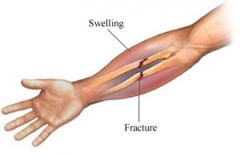

DO NOT move the person unless you believe non movement will create worse injury.
DO NOT try to fix the bone.
DO NOT try to test the person’s ability to move the injured area.
Make sure the area that is injured does not move.
Apply pressure and cover up the injury with either a bandage or clean cloth. Clothing can work as well. Try to sanitize or rinse it very gently.
Does it look like the person is in shock? Are they breathing in short rapid breaths or do they look like they will pass out? You can try laying them down and raising their legs. Their feet should be about a foot above their head. Cover them in a blanket.
Find some ice or something cold. This will keep the swelling down and make it less painful. Do not apply the cold object directly but instead wrap it in cloth first.
Try to keep the person calm

When To Call 911
If the suspected injury is in the neck, head or back.
The bone has visibly pierced the skin.
The limb has an unusual look to it, is cold, pale or blue.
Heavy bleeding, swelling or bruising
The person isn’t responding, moving or breathing or is having trouble with any of these.
Gentle pressure or movement gives the person pain.